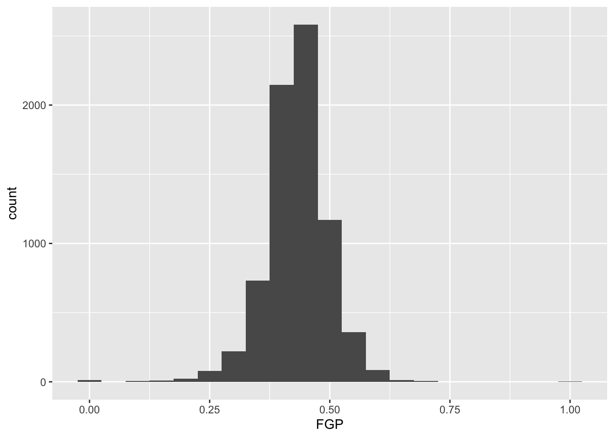

Lecture 2: The grammar of graphics and filtering data
We’re going to pick up right where we left off yesterday in Problem Set 1, where you wrote a script to create a tbl containg several shooting statistics for NBA players between the 1996-97 season and the 2015-16 season. Your script could look something like what is the code block below, and for reasons that will become clear shortly, we are going to call our tbl raw_shooting (remember: writing code in script files is good practice!)
> library(tidyverse)
> # Read in data
> raw_shooting <- read_csv(file = "data/nba_shooting.csv")
Parsed with column specification:
cols(
PLAYER = col_character(),
SEASON = col_double(),
FGM = col_double(),
FGA = col_double(),
TPM = col_double(),
TPA = col_double(),
FTM = col_double(),
FTA = col_double()
)
> # Create new columns
> raw_shooting <-
+ mutate(raw_shooting,
+ FGP = FGM / FGA,
+ TPP = TPM / TPA,
+ FTP = FTM / FTA,
+ eFGP = (FGM + 0.5 * TPM) / (FGA),
+ PTS = FTM + 2 * FGM + TPM,
+ TSP = PTS/(2 * (FGA + 0.44 * FTA)))
> # Sort by the TSP in descending order
> raw_shooting <- arrange(raw_shooting, desc(TSP))As we learned at the end of Lecture 1, rather than repeatedly referring to our tbl, we can use the pipe %>% to chain together our operations for a much cleaner chunk of code:
> # First read in the data, assigning pipeline to raw_shooting
> raw_shooting <- read_csv(file = "data/nba_shooting.csv") %>%
+ # Next create the new columns
+ mutate(FGP = FGM / FGA,
+ TPP = TPM / TPA,
+ FTP = FTM / FTA,
+ eFGP = (FGM + 0.5 * TPM) / (FGA),
+ PTS = FTM + 2 * FGM + TPM,
+ TSP = PTS / (2 * (FGA + 0.44 * FTA))) %>%
+ # And finally sort by TSP
+ arrange(desc(TSP))
Parsed with column specification:
cols(
PLAYER = col_character(),
SEASON = col_double(),
FGM = col_double(),
FGA = col_double(),
TPM = col_double(),
TPA = col_double(),
FTM = col_double(),
FTA = col_double()
)Introduction to ggplot2
We will use visualizations to answer some questions about the data. Specifically, we will study the distribution of the individual columns as well as try to understand the relationship between pairs of variables. For instance, are players attempting and making more three point shots now than they did 10 years ago?
Throughout the week, we will be using the popular ggplot2 package (again created by Hadley Wickham and a member of the tidyverse) for all of our data visualizations. The gg stands for the grammar of graphics, an intuitive framework for data visualization. Given a dataset, such as raw_shooting, we want to map the columns to certain aesthetics of a visualization, such as the x-axis, y-axis, size, color, etc. Then a geometric object is used to represent the aesthetics visually such as a barchart or scatterplot. This framework separates the process of visualization into different components: data, aesthetic mappings, and geometric objects. These components are then added together (or layered) to produce the final graph. The ggplot2 package is the most popular implementation of the grammar of graphics and is relatively easy to use.
As you saw in Prof. Wyner’s lectures, histograms are a powerful way to describe a single dataset. Let’s start with making a histogram of field-goal percentage (FGP). To do so with ggplot2, we start by telling R which tbl we want to use as the data for the plot. This is done using the ggplot() function:

As you can see, nothing is displayed! That’s because we’ve just initialized the dataset to be used for creating the plot. Next, we need to map variables/columns from the data to aesthetics/properties of the plot. Examples include:
x: the variable that will be on the x-axisy: the variable that will be on the y-axiscolor: the variable that categorizes data by colorshape: the variable that categorizes data by shape
For the histogram, we map FGP to the x aesthetic with the aes() functions, displaying values of FGP along the x-axis:

Now we can see an axis for FGP, but still no histogram! That’s because we need to add the geometric layer of the histogram to the plot. The various geometric objects available in ggplot2 are referred to as geoms, and these ultimately determine the type of play that will be created. Examples include:
geom_point(): creates a scatterplotgeom_histogram(): creates a histogramgeom_line(): creates a linegeom_boxplot(): creates a boxplot
To display the FGP histogram, we will simply add the geom_histogram() layer to the plot using the + operator:
> ggplot(data = raw_shooting, aes(x = FGP)) +
+ geom_histogram()
`stat_bin()` using `bins = 30`. Pick better value with `binwidth`.
And of course, we can equivalently generate the same figure by piping our dataset into the ggplot function. The remaining examples will use the pipe operator %>% for the remainder of this week, emphasizing how you can manipulate the tbl with various other functions prior to displaying the data:
> raw_shooting %>%
+ ggplot(aes(x = FGP)) +
+ geom_histogram()
`stat_bin()` using `bins = 30`. Pick better value with `binwidth`.
Each geom has it various attributes that can be modified whether by mapping variables with aes or global settings that affects the final displayed plot. A common problem faced with histograms is determining the width of the bins or number of bins - how much smoothing do we want of the data? You might have noticed that by default geom_histogram is using 30 bins and prints out a message for us about this decision. We can easily modify the number of bins in the geom_histogram function using the bins argument:

Or we directly specify the width of the bins reflecting the range of FGP included in each bin using binwidth:

Now you should spend time making histograms of FTP and TPP, and other variables created in code above. Discuss the differences with others.
Filtering
By this point, it should be clear that there are a number of rather curious features in our dataset. For instance, there seem to be several players who have never made a field goal but have made every one of their free throw attempts. As it turns out, we have several players who have attempted fewer than 5 field goals in a single season. We’d like to remove all of the players who have not attempted a considerable number of field goal attempts and three point attempts in order to understand how the rate and efficiency of three point shots has changed over time.
The filter() function is used to pull out subsets of observations that satisfy some logical condition like FGA > 100 or FGA > 100 and FTA > 50. To make such comparisons in R, we have the following operators available at our disposal:
==for “equal to”!=for “not equal to”<and<=for “less than” and “less than or equal to”>and>=for “greater than” and “greater than or equal to”&,|,!for “AND” and “OR” and “NOT”
The code below filter out all of the players with at least 100 field goals in a single season
> raw_shooting %>%
+ filter(FGA > 100)
# A tibble: 6,295 x 14
PLAYER SEASON FGM FGA TPM TPA FTM FTA FGP TPP FTP eFGP PTS TSP
<chr> <dbl> <dbl> <dbl> <dbl> <dbl> <dbl> <dbl> <dbl> <dbl> <dbl> <dbl> <dbl> <dbl>
1 Chris Wilcox 2013 110 153 0 1 39 58 0.719 0 0.672 0.719 259 0.725
2 Tyson Chandler 2012 241 355 0 2 217 315 0.679 0 0.689 0.679 699 0.708
3 Kyle Korver 2015 292 600 221 449 106 118 0.487 0.492 0.898 0.671 911 0.699
4 Steve Novak 2012 161 337 133 282 22 26 0.478 0.472 0.846 0.675 477 0.684
5 Chris Andersen 2014 177 275 3 12 120 169 0.644 0.25 0.710 0.649 477 0.683
6 Jeremy Evans 2011 76 115 0 1 26 37 0.661 0 0.703 0.661 178 0.678
7 Carlos Rogers 2001 75 110 0 1 29 52 0.682 0 0.558 0.682 179 0.674
8 Mason Plumlee 2014 199 302 0 3 122 195 0.659 0 0.626 0.659 520 0.670
9 Stephen Curry 2016 805 1597 402 887 363 400 0.504 0.453 0.908 0.630 2375 0.670
10 Brent Barry 2004 215 427 114 252 91 110 0.504 0.452 0.827 0.637 635 0.668
# … with 6,285 more rowsWhen we run this code, you’ll notice that R prints out a tbl with 6,295 rows.
We can also filter on more complicated conditions constructed using the AND, OR, and NOT operators: &, |, and !. For instance, to filter observations with at least 100 field goal attempts OR 50 three point attempts, we would do
> raw_shooting %>%
+ filter(FGA >= 100 | TPA >= 50)
# A tibble: 6,328 x 14
PLAYER SEASON FGM FGA TPM TPA FTM FTA FGP TPP FTP eFGP PTS TSP
<chr> <dbl> <dbl> <dbl> <dbl> <dbl> <dbl> <dbl> <dbl> <dbl> <dbl> <dbl> <dbl> <dbl>
1 Chris Wilcox 2013 110 153 0 1 39 58 0.719 0 0.672 0.719 259 0.725
2 Tyson Chandler 2012 241 355 0 2 217 315 0.679 0 0.689 0.679 699 0.708
3 Kyle Korver 2015 292 600 221 449 106 118 0.487 0.492 0.898 0.671 911 0.699
4 Steve Novak 2012 161 337 133 282 22 26 0.478 0.472 0.846 0.675 477 0.684
5 Chris Andersen 2014 177 275 3 12 120 169 0.644 0.25 0.710 0.649 477 0.683
6 Jeremy Evans 2011 76 115 0 1 26 37 0.661 0 0.703 0.661 178 0.678
7 Carlos Rogers 2001 75 110 0 1 29 52 0.682 0 0.558 0.682 179 0.674
8 Brian Cardinal 2011 43 100 42 87 17 18 0.43 0.483 0.944 0.64 145 0.672
9 Mason Plumlee 2014 199 302 0 3 122 195 0.659 0 0.626 0.659 520 0.670
10 Stephen Curry 2016 805 1597 402 887 363 400 0.504 0.453 0.908 0.630 2375 0.670
# … with 6,318 more rowsWe may combine these constraints by enclosing them in parantheses.
> raw_shooting %>%
+ filter((FGA >= 100 & TPA >= 50) | (FGP >= 0.45 & FGP <= 0.5))
# A tibble: 4,837 x 14
PLAYER SEASON FGM FGA TPM TPA FTM FTA FGP TPP FTP eFGP PTS TSP
<chr> <dbl> <dbl> <dbl> <dbl> <dbl> <dbl> <dbl> <dbl> <dbl> <dbl> <dbl> <dbl> <dbl>
1 Keith Bogans 2014 3 6 3 6 3 3 0.5 0.5 1 0.75 12 0.820
2 Kyle Korver 2015 292 600 221 449 106 118 0.487 0.492 0.898 0.671 911 0.699
3 Aleksandar Djordjevic 1997 8 16 5 7 4 5 0.5 0.714 0.8 0.656 25 0.687
4 Steve Novak 2012 161 337 133 282 22 26 0.478 0.472 0.846 0.675 477 0.684
5 Brian Cardinal 2011 43 100 42 87 17 18 0.43 0.483 0.944 0.64 145 0.672
6 Stephen Curry 2016 805 1597 402 887 363 400 0.504 0.453 0.908 0.630 2375 0.670
7 Brent Barry 2004 215 427 114 252 91 110 0.504 0.452 0.827 0.637 635 0.668
8 Manu Ginobili 2012 150 285 52 126 88 101 0.526 0.413 0.871 0.618 440 0.668
9 Steve Kerr 1997 249 467 110 237 54 67 0.533 0.464 0.806 0.651 662 0.667
10 Brent Barry 2007 202 425 128 287 103 117 0.475 0.446 0.880 0.626 635 0.666
# … with 4,827 more rowsWhat if we wanted to pull out the observations corresponding to the 2015-16 and 2014-15 season? We could do something like filter(raw_shooting, (SEASON == 2016) | (SEASON == 2015)), which would be perfectly fine. However, what if we wanted data from 1998-99, 2011-12, and 2015-16? Typing a lot of expressions like SEASON == ... would be rather tedious. The %in% operator lets us avoid this tedium:
> raw_shooting %>%
+ filter(SEASON %in% c(1999, 2012, 2016))
# A tibble: 1,150 x 14
PLAYER SEASON FGM FGA TPM TPA FTM FTA FGP TPP FTP eFGP PTS TSP
<chr> <dbl> <dbl> <dbl> <dbl> <dbl> <dbl> <dbl> <dbl> <dbl> <dbl> <dbl> <dbl> <dbl>
1 Tyson Wheeler 1999 1 1 1 1 1 2 1 1 0.5 1.5 4 1.06
2 Tyson Chandler 2012 241 355 0 2 217 315 0.679 0 0.689 0.679 699 0.708
3 Jorge Gutierrez 2016 6 11 0 2 10 11 0.545 0 0.909 0.545 22 0.694
4 Steve Novak 2012 161 337 133 282 22 26 0.478 0.472 0.846 0.675 477 0.684
5 Sam Jacobson 1999 3 5 0 1 2 2 0.6 0 1 0.6 8 0.680
6 Stephen Curry 2016 805 1597 402 887 363 400 0.504 0.453 0.908 0.630 2375 0.670
7 Manu Ginobili 2012 150 285 52 126 88 101 0.526 0.413 0.871 0.618 440 0.668
8 James Harden 2012 309 629 114 292 312 369 0.491 0.390 0.846 0.582 1044 0.660
9 Steve Novak 2016 8 18 7 15 1 1 0.444 0.467 1 0.639 24 0.651
10 Brad Miller 1999 78 138 1 2 81 102 0.565 0.5 0.794 0.569 238 0.651
# … with 1,140 more rowsWe could also filter out data from the two lockout-shortened seasons, 1998-99 and 2011-12 using a combination of the NOT ! operator and %in%.
> raw_shooting %>%
+ filter(!SEASON %in% c(1999, 2012))
# A tibble: 6,721 x 14
PLAYER SEASON FGM FGA TPM TPA FTM FTA FGP TPP FTP eFGP PTS TSP
<chr> <dbl> <dbl> <dbl> <dbl> <dbl> <dbl> <dbl> <dbl> <dbl> <dbl> <dbl> <dbl> <dbl>
1 Dajuan Wagner 2007 1 1 1 1 1 2 1 1 0.5 1.5 4 1.06
2 Amir Johnson 2006 7 10 2 3 4 4 0.7 0.667 1 0.8 20 0.850
3 Keith Bogans 2014 3 6 3 6 3 3 0.5 0.5 1 0.75 12 0.820
4 Steve Novak 2011 35 67 26 46 8 8 0.522 0.565 1 0.716 104 0.737
5 Chris Crawford 2003 8 13 1 3 7 8 0.615 0.333 0.875 0.654 24 0.726
6 Chris Wilcox 2013 110 153 0 1 39 58 0.719 0 0.672 0.719 259 0.725
7 Maceo Baston 2007 49 76 3 7 37 47 0.645 0.429 0.787 0.664 138 0.714
8 Kyle Korver 2015 292 600 221 449 106 118 0.487 0.492 0.898 0.671 911 0.699
9 Jorge Gutierrez 2016 6 11 0 2 10 11 0.545 0 0.909 0.545 22 0.694
10 Aleksandar Djordjevic 1997 8 16 5 7 4 5 0.5 0.714 0.8 0.656 25 0.687
# … with 6,711 more rowsFor the remainder of this module, we will focus on the non-lockout seasons (ie !SEASON %in% c(1999, 2012, 2016)) but we still need to determine a cutoff for FGA and TPA. Let’s start by making histograms of the two variables to see their individual distributions, and rather than creating a new temporary tbl we’ll take advantage of the %>%. First for FGA,
> raw_shooting %>%
+ filter(!SEASON %in% c(1999, 2012)) %>%
+ ggplot(aes(x = FGA)) +
+ geom_histogram(binwidth = 50)
And now for TPA,
> raw_shooting %>%
+ filter(!SEASON %in% c(1999, 2012)) %>%
+ ggplot(aes(x = TPA)) +
+ geom_histogram(binwidth = 25)
It might not make sense however to make a cutoff for FGA and TPA without considering their relationship.
Bivariate plots for continuous data
We can proceed to view the joint distribution of FGA and TPA, the relationship between the two variables, by displaying a scatterplot of the data. Obviously, as TPA increases the FGA will increase (since FGA is the sum of TPA and number of two-point attempts). We create a scatterplot by mapping multiple variables to x and y, and use geom_point to display the desired geometric object of points instead of geom_histogram from before.
> raw_shooting %>%
+ filter(!SEASON %in% c(1999, 2012)) %>%
+ ggplot(aes(x = TPA, y = FGA)) +
+ geom_point()
Immediately, we notice a few things about the figure. First, we see the clear relationship between TPA and FGA - where where TPA provides the lower threshold on FGA (remember why is this expected). We also see what appears to be a group of points with a smaller number of three-point attempts displaying a range in values for FGA, while a main block of points shows an clear increasing relationship. A major drawback of this scatterplot is its inability to show the relative density of points. For instance, all we see is a solid black mass for the lower range of values for both TPA and FGA - making it hard to determine where an appropriate cutoff should be made.
One way to address this is to use alpha-blending to change the transparency of each point. When there are many points plotted in the same region, that region will appear darker. Just like binwidth or bins for geom_histogram, geom_point has settings we can change such as the alpha setting in this case which ranges from 0 (completely transparent) to 1 (solid and opaque, the default).
> raw_shooting %>%
+ filter(!SEASON %in% c(1999, 2012)) %>%
+ ggplot(aes(x = TPA, y = FGA)) +
+ geom_point(alpha = 0.1)
Now we have a much better idea of where the majority of points are, with a clear group of players displaying a smaller number of TPA. Another type of plot commonly used in this situation is a heatmap which you can thnk of as a two-dimensional histogram. To form a heatmap, you start by dividing the coordinate plane into many evenly-sized two-dimensional bins and then count the number of points within each bin. You then color the bin according to the count. While you can conceptually make the bins any shape you want, there are two popular conventions: rectangular binning and hexagonal binning. For this plot, we will focus on rectangular binning, using the geom_bin2d() function.
> raw_shooting %>%
+ filter(!SEASON %in% c(1999, 2012)) %>%
+ ggplot(aes(x = TPA, y = FGA)) +
+ geom_bin2d()
Now we have a color scale that has appeared to tell us the number of points in each bin. Just like histograms, we can increase the number of bins to get a much more high-resolution view of our data.
> raw_shooting %>%
+ filter(!SEASON %in% c(1999, 2012)) %>%
+ ggplot(aes(x = TPA, y = FGA)) +
+ geom_bin2d(bins = 100)
In this example, using geom_point with lower values for alpha provides a clear interpretation for where to make the cutoff. Given the histograms we previously made for each variable as well, let’s use a cutoff of TPA > 50 and FGA > 150. We can create the scatterplot as before but, to demonstrate a convenient feature of ggplot2, we’ll now assign the plot to a variable named fga_tpa_plot,
> fga_tpa_plot <- raw_shooting %>%
+ filter(!SEASON %in% c(1999, 2012)) %>%
+ ggplot(aes(x = TPA, y = FGA)) +
+ geom_point(alpha = 0.1)Notice how this code runs without displaying the plot. To display it we simply run fga_tpa_plot in the console and the plot appear,

Now we’re going to annotate this plot with the cutoffs we’ve determined. To do so, we’re going to add a vertical line to provide the cutoff for the minimum value of TPA, and a horizontal line for the minimum value of FGA. Both of these can be accomplished using the geoms geom_vline and geom_hline where we specify for each the values for the intercepts to draw the lines at. Since we’ve stored the plot in fga_tpa_plot, we can add these layers with the + operator to fga_tpa_plot directly:
> fga_tpa_plot +
+ # Add TPA cutoff
+ geom_vline(xintercept = 50) +
+ # Add FGA cutoff
+ geom_hline(yintercept = 150)
This provides us with a good indication of what we’re cutting off, but we should distinguish these lines separately from the points more. Since these are both geoms with their own set of attributes, we’ll change the color and make the line type to be dashed,
> fga_tpa_plot +
+ # Add TPA cutoff
+ geom_vline(xintercept = 50, color = "red", linetype = "dashed") +
+ # Add FGA cutoff
+ geom_hline(yintercept = 150, color = "red", linetype = "dashed")
Although ggplot2 automatically provides axis labels based on the variables we’ve mapped to the aesthetics in aes, we really need text describing what is shown in the plot. The easiest way to do this, is by adding a label layer with the labs() function. Using labs, you can provide it the same arguments as those inside aes as well as other parts of the plot to label such as the title, subtitle, and caption. We add appropriate labels to the plot above, with better descriptions for the axes, as well as an informative subtitle regarding the red-dashed lines:
> fga_tpa_plot +
+ # Add TPA cutoff
+ geom_vline(xintercept = 50, color = "red", linetype = "dashed") +
+ # Add FGA cutoff
+ geom_hline(yintercept = 150, color = "red", linetype = "dashed") +
+ # Add appropriate labels:
+ labs(x = "Number of three point attempts (TPA)",
+ y = "Number of field goal attempts (FGA)",
+ title = "Scatterplot of FGA and TPA (excluding lockout seasons 1999 and 2012)",
+ subtitle = "Red-dashed lines indicate cutoffs for TPA > 50 and FGA > 150",
+ caption = "Created by INSERT YOUR NAME HERE")
As a reminder, the code chunk above is equivalent to running the entire pipeline of code without creating any temporary objects, although not recommended…
> read_csv(file = "data/nba_shooting.csv") %>%
+ filter(!SEASON %in% c(1999, 2012)) %>%
+ ggplot(aes(x = TPA, y = FGA)) +
+ geom_point(alpha = 0.1) +
+ geom_vline(xintercept = 50, color = "red", linetype = "dashed") +
+ geom_hline(yintercept = 150, color = "red", linetype = "dashed") +
+ labs(x = "Number of three point attempts (TPA)",
+ y = "Number of field goal attempts (FGA)",
+ title = "Scatterplot of FGA and TPA (excluding lockout seasons 1999 and 2012)",
+ subtitle = "Red-dashed lines indicate cutoffs for TPA > 50 and FGA > 150",
+ caption = "Created by INSERT YOUR NAME HERE")
Parsed with column specification:
cols(
PLAYER = col_character(),
SEASON = col_double(),
FGM = col_double(),
FGA = col_double(),
TPM = col_double(),
TPA = col_double(),
FTM = col_double(),
FTA = col_double()
)
Saving our work
For next lecture we will focus on the dataset of players who attempted at least 150 field goals and 50 three pointers in the non-lockout seasons. We’ll make this clean dataset using the filter() function separating each condition with commas, and refer to the resulting dataset as nba_shooting. Finally, we’ll add a mutate() line to create the three_point_fg_rate = TPA / FGA variable from yesterday.
> nba_shooting <- raw_shooting %>%
+ # Filter on the conditions
+ filter(!SEASON %in% c(1999, 2012),
+ TPA > 50,
+ FGA > 150) %>%
+ # Create the three point attempt rate variable
+ mutate(three_point_fg_rate = TPA / FGA)While we can always re-run the commands used to produce this tbl from our script, when data analyses become more complicated, it is helpful to save these objects. R has its own special file format for efficiently saving data on your computer.
We will use the save() command.
Then when we want to load the data back into R, we can use the load() function
Next, proceed to practice this lecture’s lessons in Problem Set 2.